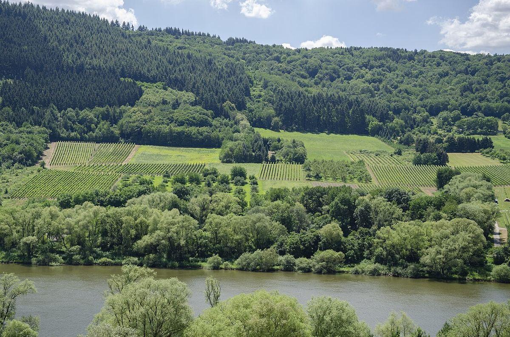

BIANCO
La regione della Mosella segue il corso tortuoso di questo fiume e dei suoi affluenti Saar e Ruwer, con vigneti di ardesia su pendii estremamente ripidi. È la culla di alcuni dei Riesling più delicati e longevi del mondo.

La viticoltura della Mosella risale all’epoca romana, quando Treviri era una delle capitali dell’Impero. Nel IV secolo il poeta Ausonio descrisse nel suo poema Mosella le vigne che coprivano i pendii del fiume, e negli scavi della zona sono stati rinvenuti torchi romani. Nel Medioevo i monasteri e l’arcivescovado di Treviri erano i grandi proprietari di vigneti. Nell’Ottocento i migliori vini della regione raggiungevano prezzi molto alti sui mercati internazionali. Fino al 2007 la regione si chiamava ufficialmente Mosel-Saar-Ruwer.
Il fiume disegna meandri molto stretti tra le colline dell’Hunsrück e dell’Eifel, e le vigne migliori si trovano sui versanti esposti a sud o a sud-ovest, spesso con pendenze straordinarie; il Calmont, vicino a Bremm, viene spesso citato come uno dei vigneti più ripidi d’Europa. Il clima è fresco e la maturazione lenta. Il fiume e l’ardesia accumulano e riflettono il calore, il che permette al Riesling di maturare a questa latitudine. La regione si divide di solito in diversi tratti: l’Alta Mosella, al confine con il Lussemburgo; la Media Mosella, con paesi celebri come Piesport, Bernkastel, Graach, Wehlen, Zeltingen, Ürzig ed Erden; la Bassa Mosella o Terrassenmosel, fino a Coblenza; e le valli più fresche della Saar e della Ruwer.
Predomina l’ardesia devoniana, grigio-azzurra nella maggior parte della regione e rossastra in alcuni vigneti, come a Ürzig. Questo suolo povero e sassoso drena bene e si riscalda facilmente. Nell’Alta Mosella compaiono invece suoli calcarei, dove si coltiva tradizionalmente l’antico vitigno Elbling.
Il Riesling domina nettamente, seguito dal Müller-Thurgau e dall’Elbling; negli ultimi anni è cresciuto anche il Pinot Nero. I Riesling della Mosella sono noti per la leggerezza, il basso grado alcolico, l’acidità vibrante e le note di frutta bianca, fiori e pietra bagnata. Tradizionalmente erano prodotti soprattutto con una certa dolcezza, nelle categorie Kabinett, Spätlese e Auslese, che restano emblematiche, e nelle grandi annate si producono Beerenauslese, Trockenbeerenauslese ed Eiswein. Oggi si producono sempre più anche vini secchi (trocken) e abboccati (feinherb). Vigneti come il Bernkasteler Doctor, il Wehlener Sonnenuhr o lo Scharzhofberg, sulla Saar, sono tra i più noti della Germania.